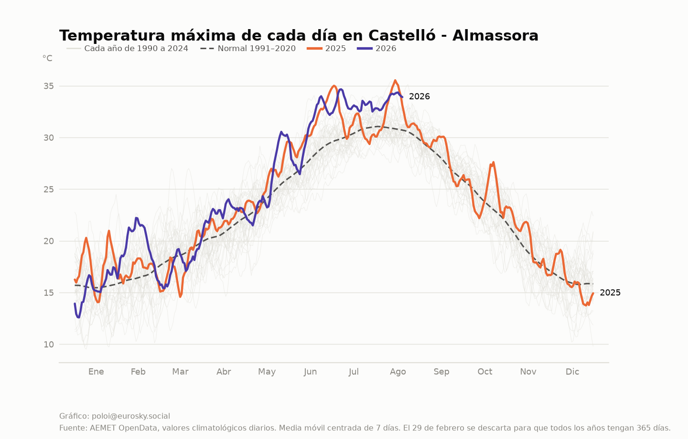
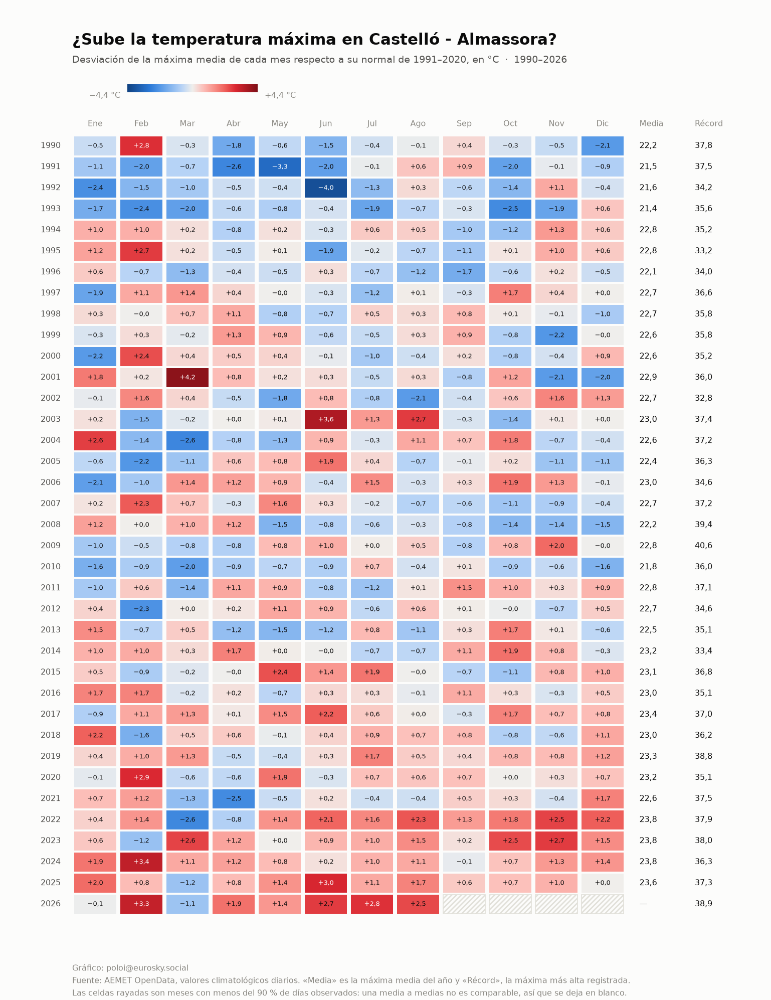
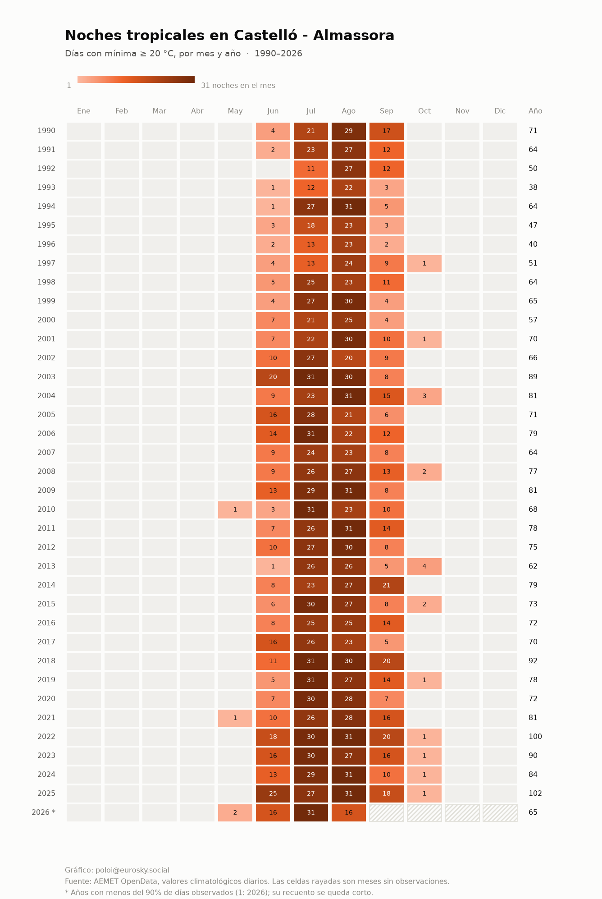
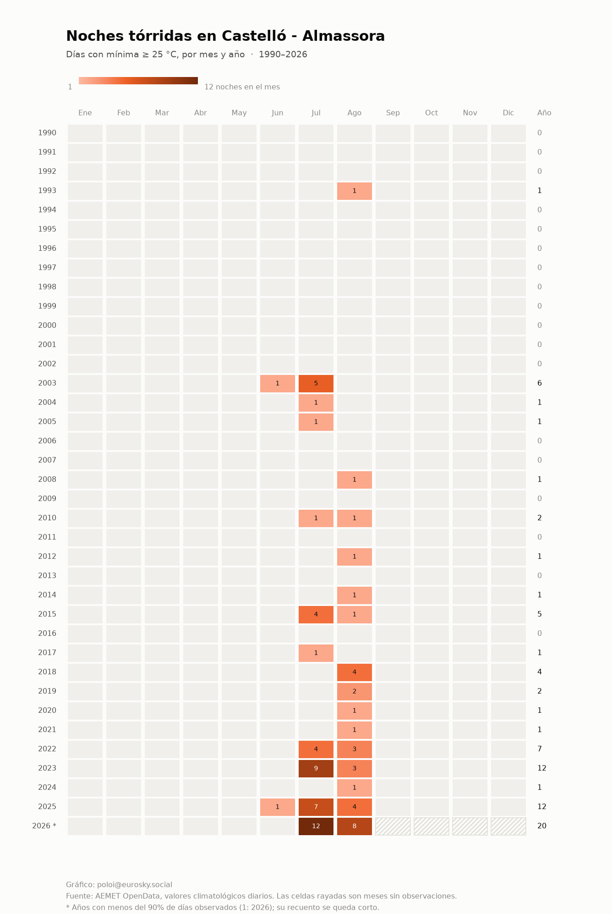
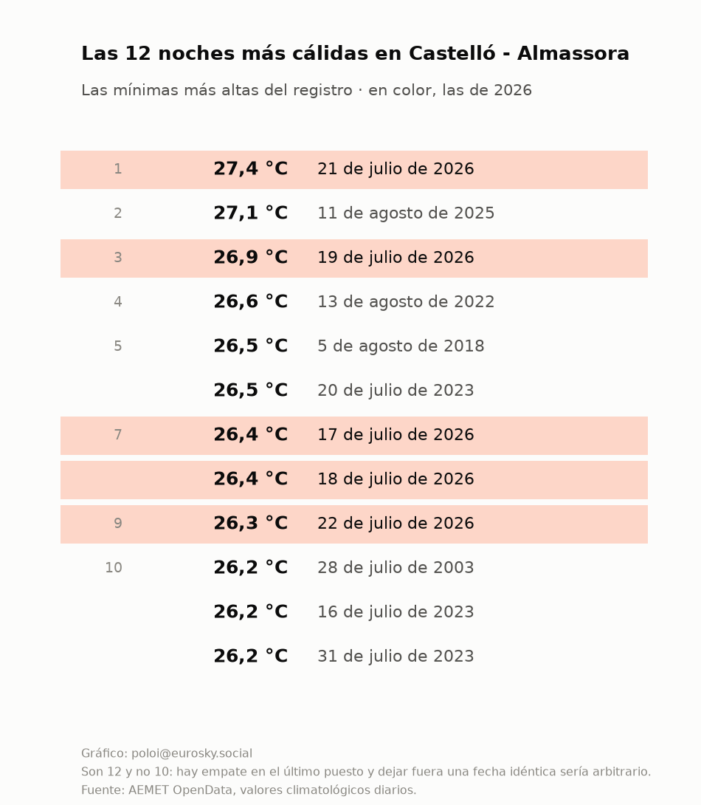
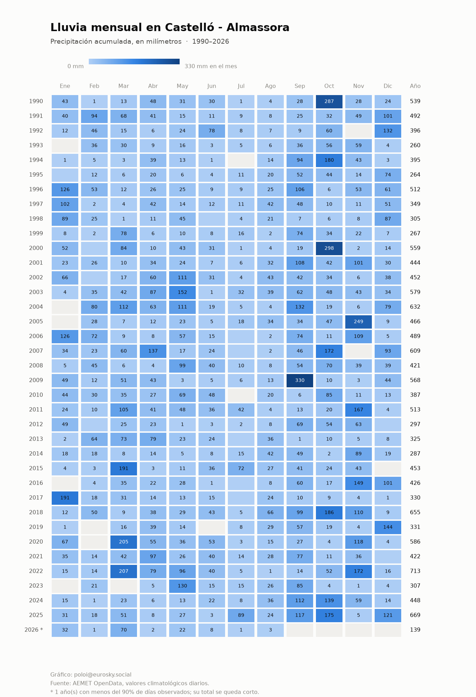

Castelló de la Plana · Almassora
Treinta y seis años de clima, contados con los datos de AEMET
La estación 8500A lleva midiendo desde 1990. Esto es lo que dicen sus datos sobre cómo han cambiado las noches, los días y la lluvia en este trozo de costa.
Actualizado el 19 de agosto de 2026 · se regenera solo cada mes · código y datos
102
noches tropicales en 2025
máximo de la serie: 102 en 2025
+10
noches más por década
1990–2025, mínima ≥ 20 °C
32
noches tórridas desde 2022
solo 1 entre 1990 y 2002 · mínima ≥ 25 °C
27,4 °C
la noche más cálida registrada
21 de julio de 2026
115 días
la racha seca más larga
acabó el 26 de febrero de 2016
46%
de la lluvia, en 5 días
media de los años completos
El año en curso frente a todos los demás
Cada línea gris es un año desde 1990. En color, los dos últimos. Media móvil de siete días para que se lean las olas de calor sin el temblor del día a día.

¿Sube la temperatura máxima?
Desviación de cada mes respecto a su normal de 1991-2020. Azul por debajo de lo normal, rojo por encima. El cero no es «el clima de antes»: son treinta años que ya llevaban calentamiento dentro.

Noches tropicales
Noches en que la temperatura mínima no bajó de 20 °C, mes a mes. El verano no se ha vuelto solo más intenso: se ha alargado por los bordes, sobre todo por junio.

Noches tórridas
El mismo mapa con el listón en 25 °C. Entre 1990 y 2002 hubo una sola noche así; en los últimos años son decenas.

Las noches más cálidas del registro
Once de las doce más cálidas desde 1990 son de 2018 en adelante.

Lluvia mensual
Precipitación acumulada por mes. En clima mediterráneo el total anual dice menos que el reparto: unos pocos días concentran buena parte del agua del año.
